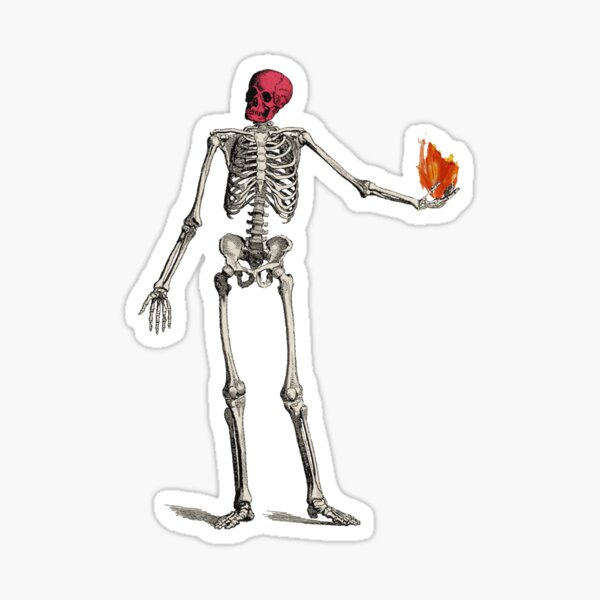

Gimme, gimme, gimme some time to think
I'm in the bathroom, looking at me
Face in the mirror is all I need (ooh)
Wait until the reaper takes my life
Never gonna get me out alive
I will live a thousand million lives (ooh)
My patience is waning
Is this entertaining?
Our patience is waning
Is this entertaining?
I-I-I got this feeling, yeah, you know
Where I'm losing all control
'Cause there's magic in my bones
I-I-I got this feeling in my soul
Go ahead and throw your stones
'Cause there's magic in my bones
Playing with a stick of dynamite
There was never gray in black and white
There was never wrong 'til there was right (ooh, oh)
Feeling like a boulder hurtling
Seeing all the vultures circling
Burning in the flames I'm working in
Turning in a bed that's darkening
My patience is waning
Is this entertaining?
Our patience is waning
Is this entertaining?
I-I-I got this feeling, yeah, you know
Where I'm losing all control
'Cause there's magic in my bones (in my bones)
I-I-I got this feeling in my soul
Go ahead and throw your stones
'Cause there's magic in my bones
'Cause there's magic in my bones
Look in the mirror of my mind
Turning the pages of my life
Walking the path so many paced a million times
Drown out the voices in the air
Leaving the ones that never cared
Picking the pieces up and building to the sky
My patience is waning
Is this entertaining?
My patience is waning
Is this entertaining?
I-I-I got this feeling, yeah, you know
Where I'm losing all control
'Cause there's magic in my bones (magic in my bones)
I-I-I got this feeling in my soul (soul)
Go ahead and throw your stones
'Cause there's magic in
There goes my mind (I-I-I)
Don't mind
There goes my mind (there it goes, there it goes)
There goes my mind (I-I-I)
Don't mind (there it goes)
There goes my mind
'Cause there's magic in my bones
IMAGINE DRAGONS